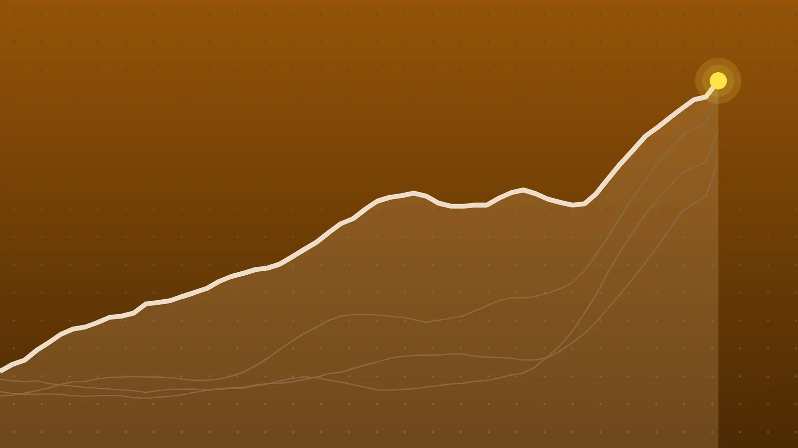

BusinessExplainer
Stock Market Today: Nasdaq Drops 2.6% as Meta Revives AI Doubts
Meta beat on revenue but burned cash on AI, and investors pulled back from the whole chip trade. Oil near five-month highs added an inflation worry, while bonds caught a rare rally.

Quick take
- The Nasdaq Composite closed down 694 points, or 2.6%, at 26,008.86. The S&P 500 lost 1.21% and the Dow finished nearly flat.
- Meta fell about 7% to $648.85 after AI spending pushed its free cash flow below zero, which Reuters said hadn’t happened in over 10 years.
- The Philadelphia semiconductor index dropped 6.7%, its biggest fall since June 23, while Brent crude rose above $111 a barrel.
- The 10-year Treasury yield dipped under 5%, a level it had stayed above since Sept. 23. The Fed’s next rate decision is Oct. 28.
Why it's trending U.S. tech stocks fell sharply on Oct. 22 after Meta’s quarterly report revived doubts about AI spending, sending the Nasdaq to its steepest one-day drop since early June.
What happened
Tech stocks took a hard hit on Thursday, Oct. 22. The Nasdaq Composite closed down 694 points, or 2.6%, at 26,008.86, its steepest one-day drop since early June, Reuters reported. The tech-heavy Nasdaq 100 lost 2.9%, according to Stock Titan.
The broader market fell less. The S&P 500 slid 93.74 points, or 1.21%, to 7,663.43, a bigger drop than the 1.1% slide on Oct. 14 that AP called its worst day since July. The Dow Jones Industrial Average, which holds fewer tech names, scraped out a gain of about 12 points to end at 52,867.98.
The trigger was Meta’s quarterly report on Wednesday evening, which reopened a question investors keep circling back to: how long can the biggest tech companies keep spending this much on artificial intelligence before it pays off?
Why Meta set it off
On the surface, Meta’s numbers were good. Revenue rose 26% from a year earlier to $64.6 billion, above the roughly $63.4 billion analysts expected, Business Today reported. The stock even rose more than 2% in after-hours trading at first.
The problem was cash. Meta’s free cash flow, what’s left after paying for data centers and equipment, turned negative by about $2.1 billion. Reuters said Meta hadn’t burned cash like that in over 10 years. Meta also raised the bottom of its full-year capital spending forecast to $135 billion, from $130 billion, with a top end of $145 billion, and laid out a plan for a new nonvoting share class.
Shares closed down 6.98% at $648.85, Reuters data on MarketScreener show. That’s about $48.67 a share lower than Wednesday’s close of $697.52.
The chip sell-off
Meta’s report weighed on every company that sells into the AI build-out. The Philadelphia semiconductor index fell 6.7%, its biggest drop since June 23, Reuters reported. Intel, AMD, Sandisk and Marvell each lost more than 8%.
According to Yahoo Finance, CoreWeave fell about 10%, while Lam Research and SpaceX each dropped about 9%. Yahoo also noted that IBM’s chief executive said some large companies are questioning what they’re getting back from their AI spending.
Some context matters here. Even after Thursday, the chip index was still up 51.5% for the year, though it is still down by more than a quarter (over 26%) from the record it set on June 22. One analyst told Reuters that investors are “starting to realize that there are some holes in the AI story.”
Oil’s role
Energy markets added a second worry. Brent crude, the global benchmark, climbed 2.23% to $111.25 a barrel in afternoon trading, its highest level since May, and U.S. crude rose 1.22% to $98.35, according to Reuters.
The push came from the Middle East. Iran-backed Houthi forces struck more targets in Saudi Arabia, including an airport and an Aramco oil field, as covered in our explainer on the Dammam airport attack. Reuters also reported that Iran’s Revolutionary Guard navy said several ships were hit or struck mines near the Strait of Hormuz, and that the U.S. State Department is pulling family members out of some missions in the region.
Higher oil feeds into gasoline, shipping and airfares, which is why traders read it as an inflation risk. Reuters said futures markets now price in about a quarter-point Federal Reserve rate hike before the end of the year.
The numbers
| Market | Thursday’s close or move | Change |
|---|---|---|
| Nasdaq Composite | 26,008.86 | −694.00 (−2.60%) |
| S&P 500 | 7,663.43 | −93.74 (−1.21%) |
| Dow | 52,867.98 | +11.89 (+0.02%) |
| Nasdaq 100 | — | −2.90% |
| Philadelphia chip index | — | −6.7% |
| Brent crude (afternoon) | $111.25 | +2.23% |
| 10-year Treasury yield (afternoon) | 4.994% | −15 basis points |
Not everything fell. Spotify jumped 11.1%, Blackstone 8.4%, Lockheed Martin 7% and Procter & Gamble 5.6%, Reuters reported. The S&P 500 is still up 11.9% for 2026.
A rare bond rally
When stocks sell off, investors often move money into government bonds, which pushes bond prices up and yields down. That happened Thursday. The 10-year Treasury yield fell about 15 basis points (0.15 percentage point) to 4.994%, its first dip under 5% since Sept. 23.
That cut in long-term rates is a small relief for borrowers, since mortgage rates tend to follow the 10-year. It also set up an unusual comparison: France’s 10-year yield, which hit its highest since 2002 this week, rose above the U.S. yield for the first time since 2013, Reuters said. We covered that in our explainer on French bond yields.
The selloff spread to India
Oil also weighed on Indian stocks, which trended in searches there. The Sensex fell 460.30 points, or 0.62%, to 73,249.39, and the Nifty 50 lost 0.54% to 22,687.65, the third straight down day, Business Standard reported. India imports most of its oil, so rising crude raises concerns about inflation and the import bill.
What to watch
- Oct. 28: the Federal Reserve announces its next interest-rate decision under Chair Kevin Warsh. As of Oct. 17, futures priced only about a 15% chance of a hike at this meeting, according to Tiger Brokers.
- Middle East: any further attacks on Saudi energy sites or shipping near Hormuz could keep oil above $100.
- Nov. 3: the U.S. midterm elections.
- More earnings: Reuters said 83% of the 111 S&P 500 companies that have reported so far beat estimates, so the season is strong overall even as AI spending draws scrutiny.
Quick answers
Why is the Nasdaq down today?
Meta’s earnings showed AI spending pushing its cash flow negative, which revived doubts about the AI trade and pulled chip stocks down 6.7%. Rising oil prices added to inflation worries.
How much did Meta stock fall?
Meta closed down 6.98% at $648.85 on Oct. 22.
Did the Dow fall on Oct. 22?
No. The Dow finished up about 12 points, at 52,867.98, while the S&P 500 and Nasdaq fell.
Sources
- Reuters S&P 500, Nasdaq end sharply lower as revived AI doubts ignite tech selloffOct. 22, 2026
- Reuters Stocks drop as Meta dampens AI optimism; Treasury yields fallOct. 22, 2026
- Yahoo Finance Stock market today: S&P 500, Nasdaq tanks as tech stocks sink amid AI trade worries, Meta shares plummetOct. 22, 2026
- Reuters Oil climbs over $1 on more Houthi attacks in Saudi ArabiaOct. 22, 2026
- Business Today Meta shares slide 7% as AI spending push drives capex higher, free cash flow turns negativeOct. 22, 2026
- Stock Titan Stock Market Today: AI and Chip Stocks Made Up 90% of the Net Value the Nasdaq-100 LostOct. 22, 2026
- Business Standard Stock Market Close: Sensex falls 460 pts, Nifty ends at 22,688; RIL, Eternal, HDFC Bank top losersOct. 22, 2026
- Investing.com U.S. stock futures fall as investors weigh Tesla, Meta earningsOct. 22, 2026
- Associated Press via OPB US stocks drop to their worst day since July as inflation worsensOct. 14, 2026
- Tiger Brokers Markets broadly expect the Fed to hold rates steady in October, but Kevin Warsh could deliver a surpriseOct. 17, 2026
Keep reading

Oil Prices: Brent Tops $116 on Fears the Iran War Will Restart
Oil prices jumped Oct. 23, 2026, with Brent settling at $116.72 and U.S. crude above $103. Why crude spiked, what it means for gas prices and what to watch next.
Alphabet Stock Has Its Worst Day Ever, Losing Nearly $500B
Alphabet stock fell nearly 13% on Oct. 29 after Q3 results showed slower search growth and $9.1 billion in negative free cash flow. What went wrong and what’s next.
SpaceX Earnings: Q3 Revenue Hits $14.6B as Tesla Merger Talk Grows
SpaceX earnings beat forecasts with $14.6 billion in Q3 revenue, and Musk says Tesla and SpaceX committees are studying a merger. Here’s what it means.